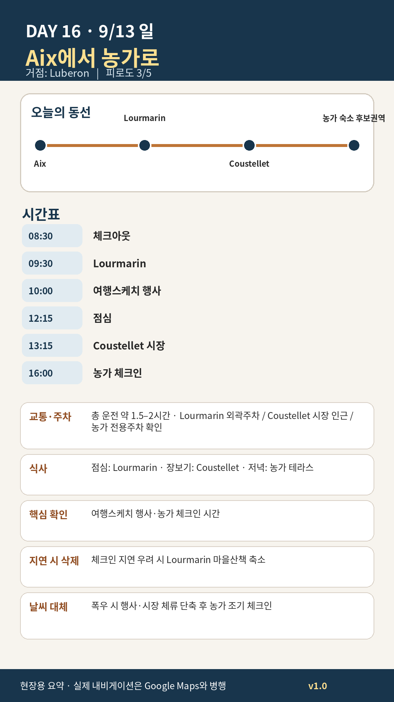

Day 16 · 9/13 일 · Luberon
거점 이동양쪽 챕터
- 핵심 실행
- Lourmarin→Coustellet→농가
- 권장 출발
- 08:30 체크아웃
- 완충
- 시장·장보기·농가진입 90분
시간표
Aix
| 시간 | 일정 | 실행 포인트 |
|---|---|---|
| 07:30–09:15 | 아침·최종정리·체크아웃 | 냉장고·쓰레기·주차카드 확인 |
| 09:15–10:15 | Aix→Lourmarin | 차량 내 짐 완전은폐 |
| 10:30–13:30 | Lourmarin | 마을·스케치행사·가벼운 점심 |
| 13:30 이후 | Coustellet 장보기·농가 체크인 | 해지기 전 진입 |
피로도
3/5
이 날의 장소
일자별 시간표와 본문 표기에서 찾은 것이다. 하루의 전부가 아니라 장소 카드가 있는 것만 담는다.
이 날의 메모
Aix
Aix 체크아웃, Lourmarin을 거쳐 Luberon 농가로
농가 체크인 안정성이 Lourmarin 추가관광보다 우선이다.
Luberon
엑상 → Lourmarin 여행스케치 행사 → Coustellet 생산자시장 → 농가
오늘 꼭 해볼 것
- 여행스케치 행사에서 마음에 드는 화가·스케치북 2–3개 기록하기
- Coustellet 시장에서 생산자에게 직접 제철 과일과 치즈를 사기
- 체크인 직후 농가의 주방·세탁기·대문·야간 진입·테라스 사용조건을 확인하기
- 첫날 저녁은 외식보다 테라스 식사로 농가체류의 리듬을 시작하기
선택 대안
- 여행스케치 행사 관심이 낮아지면 Lourmarin 마을 60분으로 축소
- 시장에 늦으면 Coustellet 슈퍼에서 최소 장보기 후 농가로 직행
- 행사 혼잡이 심하면 Lourmarin 대신 Roussillon의
Livre en fête를 선택할 수 있으나, 동선은 덜 효율적
상세 실행 확인
- 최고 리스크
- 체크인·냉장식품·농가접근
- 우선 삭제
- Lourmarin 체류 축소
- 대체안
- 행사·시장 축소 후 조기체크인
- 식사·휴식
- Lourmarin 점심
- 잠금 필요
- 농가·행사
모바일 카드 이미지

카드의 지도영역은 일정 순서를 보여주는 개요이며 내비게이션이 아닙니다. 실제 도보·운전 경로는 Google Maps에서 다시 계산하세요.